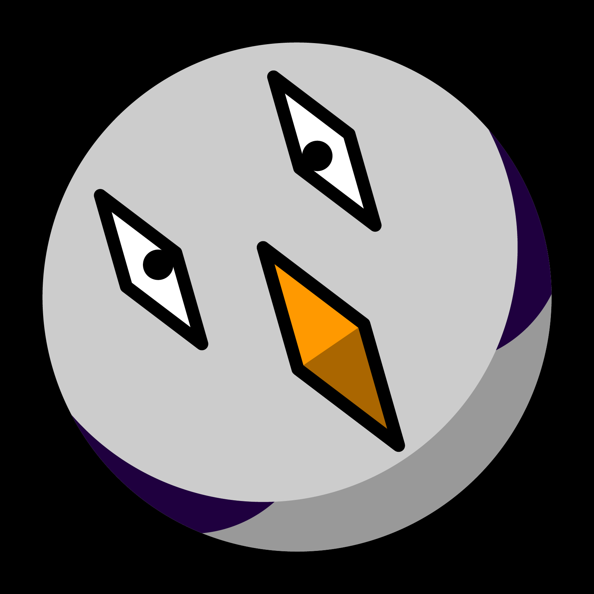

这是
geezmo
lycos
(金毛)的个人站点
现在时间是：
我的
bilibili主页
、
github 主页
本地时间
蚂蚁时间(UTC+7)
金毛的
妙妙
工具箱：
toki pona 汉字假名正字法转换器
金毛福利
LaTeX AE摆烂动画 svg版
内部查重器
Windows地方时注册表配置生成器
文件格式可视化
自用视频串流及聊天服务
金毛身高计算器

clear timeshift
set time
-1s
+1s
-1min
+1min
-1hour
+1hour
-1day
+1day
-30days
+30days